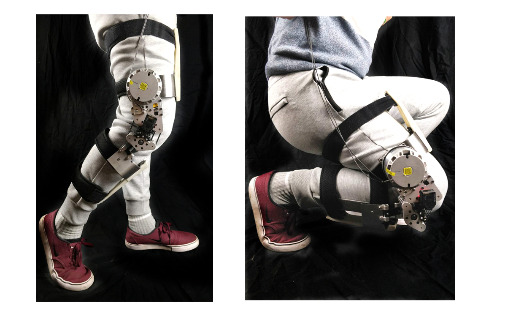
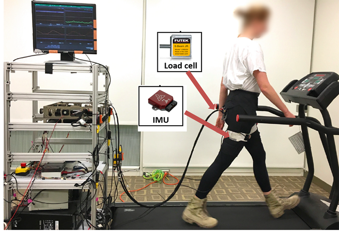
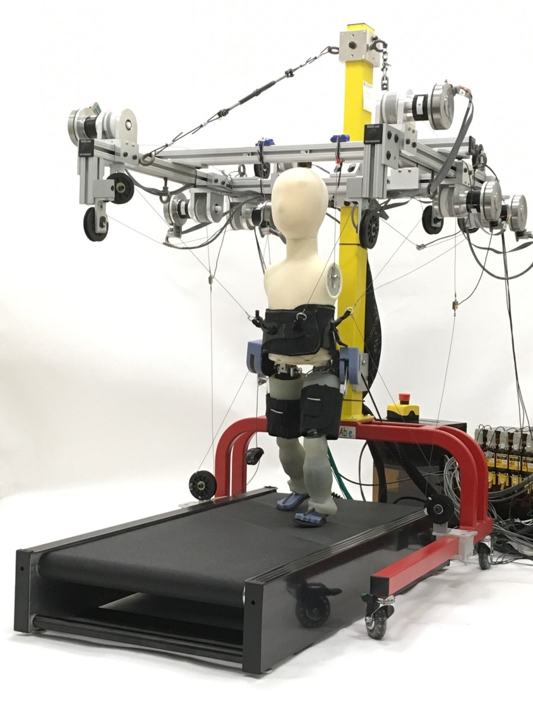

Soft Exoskeletons for Human Augmentation and Restoration
We develop both enabling technologies (i.e. high torque density motors and soft fabric sensors) and robotic systems to augment human capability with wearable robots. Soft exoskeleton is a new design methodology that optimizes both comfort and performance of the users.

Soft Exosuits (postdoc work at Harvard University)
During my postdoc research, I developed wearable sensors for human motion sensing and force control system using the 4-DOF offboard actuation platform. The textile-based soft exoskeleton has major advantagges than conventional rigid exoskeleton: the worn part of the suit is extremely light, it avoids the biological joint misalignment issue with the robot joints, and minimize the suit's unintentional interference with the human natural biomechanics and allow for more synergistic interaction with the wearer. This was my postdoc work conducted at Harvard Biodesign Lab. This project was led by Prof. Conor Walsh and consists of multidisinplinary researchers in apparel design, biomechanics and robotics.
Multi-robot Cyberphysical System for Gait Rehabilitation of Developmentally-delayed Children (postdoc work at Harvard University)
During my postdoc research, I contributed to control system development of a modular, computationally-distributed multi-robot cyberphysical system (CPS) for gait rehabilitation of developmentally-delayed children. It addresses the research target area of new CPS technology by introducing a multi-robot system: 1) a multi-cable scaffold robot that continuously modulates the stabilization of medio-lateral and anterior-posterior sway, and 2) a soft, wearable, exosuit robot with embedded sensing and actuation, which assists with stance push off and swing flexion. My role was to develop an IMU based gait detection and control strategy to assist and coordinate pelvic motion and hip flexion motion. This novel method is adaptive to different subjects and different gaits. This was my postdoc work and the PI is Prof. Eugene Goldfield (Boston Children Hospital, Harvard Medical School), Co-PI Prof. Conor Walsh and Sunil Agrawal (Columbia University).
